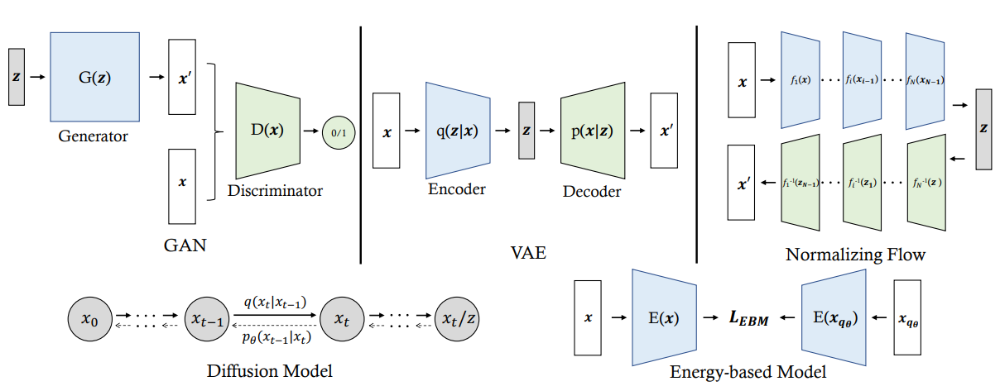
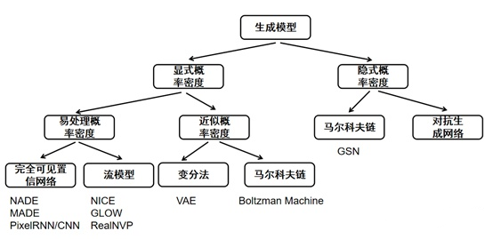
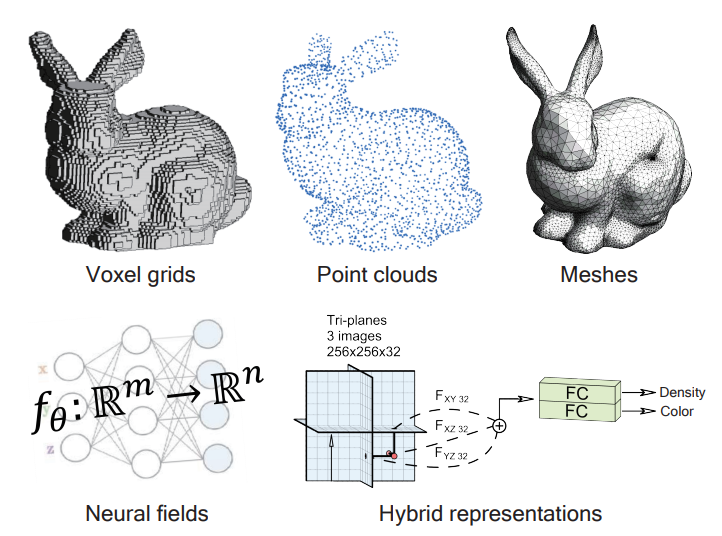

Deep Generative Models on 3D Representations: A Survey
目录：
一、简介
二、深度生成模型
三、3D表示
四、3D形状生成
附录
一、简介
问题
我们期望理想的三维表示能够具备足够的能力来详细建模形状和外观，并且具备高效性，以便能够快速模拟高分辨率数据并且在内存成本低的情况下实现。然而，现有的三维表示，例如点云、网格和最近的神经场，通常无法同时满足上述要求。
现有技术
生成模型：变分自编码器（VAEs）、自回归模型（ARs）、归一化流（NFs）、生成对抗网络（GANs）和最近的扩散概率模型（DPMs）都能够将潜变量转换为高质量的图像。
3D表示：在2D生成和3D生成之间的一个关键区别是数据格式。2D图像可以自然地表示为像素值的数组，可以方便地通过神经网络进行处理。相反，有许多3D表示方法可以描述3D实例，例如点云（point cloud），网格（mesh），体素网格（voxel grid），多平面图像（multi-plane images），隐式神经表示（implicit neural representations）等。每种表示方法都有其优势和局限性。例如，网格可以紧凑地表示3D形状，但由于不规则的数据结构，很难通过神经网络进行分析和生成。相比之下，体素网格在3D空间中有规律地定位，并且与标准卷积神经网络配合效果良好，但体素网格在内存消耗方面较大，并且难以表示高分辨率的3D场景。选择适当的表示方法对于3D内容生成至关重要。
二、深度生成模型
生成模型旨在以无监督的方式学习实际数据分布，通过尽可能逼真地生成数据来捕捉更多细节并展现更多创造力。生成模型首先需要总结输入数据的分布，然后利用这些总结信息在给定的数据分布中创建或合成样本。
生成模型可以分为两个主要类别。一类是基于似然的模型(likelihood-based models)，包括变分自动编码器（VAEs）、归一化流（N-Flows）、扩散模型（DDPMs）以及能量模型（EBMs），这些模型通过最大化给定数据的似然来进行学习。另一类是无似然模型(likelihood-free models)，包括生成对抗网络（GANs），它们基于一个双方零和博弈来寻找纳什均衡点。


GAN
生成对抗网络（Generative Adversarial Networks，简称GANs）在数据合成方面表现出色。GAN由两个独立的网络组成：生成器G(·)以从先验分布z ∼ pz中采样得到的潜在编码作为输入来创建数据，判别器D(·)旨在区分真实数据x ∼ px和合成数据G(z)。在训练过程中，G(·)需要尽可能逼真地合成数据，以欺骗D(·)使其认为这些样本是真实的，而D(·)则被训练成将G(·)合成的样本标记为假的，将训练样本x标记为真的。这两个网络相互竞争，并可以被形式化为一个最小最大博弈（零和博弈）。它们通过联合优化来进行训练。
随着深度学习的兴起，GAN中的两个网络逐渐采用了深度神经网络的参数化方法，如DC-GAN。最近的GAN变体，如PG-GAN、StyleGAN1-3改进了网络架构，能够合成逼真的样本。
缺点：
- 由于优化双方博弈的难度很大，GAN在稳定训练网络方面存在困难，导致更容易出现不收敛的情况。
- GAN还面临着模式崩溃的问题，即生成器将多个不同的潜在编码映射到相同的输出上。
VAE
变分自编码器（Variational Autoencoders，VAEs）是一种深度潜变量模型（Deep Latent Variable Models，DLVMs），通过神经网络对数据分布$x\sim p_\theta$进行参数化，引入潜在变量$z$，并给出一个先验分布$z\sim p_z$。DLVMs的参数$\theta$很难进行微分和优化，因为我们想要最大化的似然函数$p_\theta(x) = p_\theta(x|z)p_z(z)dz$是难以计算的。而变分自编码器通过对难以计算的后验进行有效近似，将其转化为一个可解的问题。具体来说，通过使用前馈模型对后验分布qφ(z|x)进行参数化，并通过最小化自身与先验分布$p_\theta(z|x)$之间的KL散度来进行优化：
被称为证据下界（ELBO）。由于$q_\phi (z|x)$的前馈模式，推断新样本的效率很高。并且，由于重构损失函数的存在，训练过程是稳定的。
缺点：
- 变分自编码器也会遭受后验崩溃的问题，即学习到的潜在空间变得对重构给定数据不具有信息性。
- 由于注入的噪声和不完美的重构，变分自编码器更容易合成比起GAN生成的样本更模糊的样本。
NF
在GANs和VAEs中，使用参数化模型来隐式地学习数据的密度，因此无法计算精确的似然函数来优化模型训练。而归一化流通过引入一组可逆变换函数来缓解这个问题。它从一个正态分布开始，然后一系列的可逆函数$f_{1:N}(·)$依次将正态分布转化为最终输出的概率分布：
由于$f_i$的可逆性质，新变量$z_i$的概率密度函数可以很容易地从上一步的变量$z_{i-1}$估计得到：
根据链式法则，经过N次变换后的最终输出zN的密度可以通过以下方式获得：
其中，由$z_i$组成的完整链被称为归一化流（normalizing flow）。由于其可逆性质，归一化流可以轻松用于新样本生成、潜在变量投影以及密度值估计。
缺点：
- 归一化流在平衡参数化模型的容量和效率方面存在困难。
Diffusion Models
扩散模型（Diffusion models）由一个马尔可夫链参数化，该链通过噪声调度（噪声逐渐增加）$\beta_{1:T}$将输入数据$x_0$进行处理，其中$T$表示时间步数。理论上，当$T \to ∞$时，$x_T$成为一个正态高斯分布。
通过学习扩散过程的反向过程，通过建模从噪声到数据的转换$q(x_{t−1}|x_t)$来重构输入。然而，后验推断$q(x_{t−1}|x_t)$也是不可计算的，因此使用参数化模型$p_\theta$来模拟条件转换概率，通过优化类似于VAE的ELBO。由于不可计算的长马尔可夫链，扩散模型可以合成高质量的数据，并以稳定的方式进行训练。
缺点：
- 推断新样本的成本较高，采样过程比GAN和VAE更慢。
更详细的Diffusion Models介绍可以参考这里。
Energy-based model
能量基模型（Energy-based models）利用能量函数（energy function）来显式地建模数据的概率分布。它建立在一个基本思想之上，即任何概率函数都可以通过将其体积除以某个常数来转化为能量函数：
其中$-E_\theta(x)$是能量函数。显然高似然的数据点有较低的能量，低似然的数据点有较高的能量。然而，由于计算高维数据的$\int_x exp(−E(x))$是困难的，优化似然函数是棘手的。为了缓解优化难题，对比散度（contrastive divergence）被提出，通过比较$p(x)$上的似然梯度和从能量分布$q_\theta (x)$中随机采样的数据的似然梯度来进行优化：
能量分布$q_\theta (x)$通过马尔可夫链蒙特卡洛（Markov Chain Monte Carlo，MCMC）过程进行近似。
三、3D表示

体素网格
体素是在3D空间中定期放置的欧几里得结构化数据，类似于2D空间中的像素。为了表示3D形状，体素可以存储几何占据度、体积密度或符号距离值。由于体素网格的规则性，它们与标准卷积神经网络结合使用效果良好，并广泛应用于深度几何学习中。作为先驱，3D ShapeNets将体素网格引入了3D场景理解任务中。它将深度图转换为3D体素网格，然后通过卷积深度置信网络进行进一步处理。体素网格通常用作3D重建任务中的网络输出，而不是前面提到的方法中的网络输入。3D-R2N2使用2D卷积神经网络将输入图像编码为潜在向量，并利用3D卷积神经网络预测目标体素网格。尽管体素网格非常适合3D CNN，但使用神经网络处理体素通常会占用大量内存。为了解决这个问题，一些工作引入了八叉树数据结构进行形状建模。
体素网格在渲染任务中也有许多应用。早期的方法在体素中存储高维特征向量，用于编码场景的几何和外观信息，通常被称为特征体素，并可以使用投影和2D卷积神经网络转换为彩色图像。Neural Volumes使用CNN预测RGB-Alpha体素，并利用体素渲染技术合成图像。多平面图像（MPI）可以看作是一种体素网格，它将3D空间划分为几个深度平面，并在这些深度平面上定义了RGB-Alpha图像。由于它们减少了沿深度维度的体素数量，基于MPI的方法在一定程度上节省了计算成本。近年来，体素网格与神经场的结合成为一种趋势，这将在混合表示部分进行讨论。
点云
点云是三维空间中无序的点的集合（深度图和法线图可以视为点云表示的特殊情况）。它可以被看作是三维形状表面的离散化采样。点云是深度传感器的直接输出，因此在三维场景理解任务中非常流行。尽管点云易于获取，但其不规则性使得它们难以使用现有的为规则网格数据（例如图像）设计的神经网络进行处理。此外，由于采样的变化，底层三维形状可以由许多不同的点云表示。
许多方法尝试有效且高效地分析三维点云：
- PointNet利用MLP网络从点集中提取特征向量，并通过最大池化对所有点的特征进行汇总，以实现对点的顺序的不变性；
- PointNet++将点云分层分组为几个集合，并单独使用PointNet处理局部点集，从而捕捉点云的多个级别的局部上下文。
一些方法将点云重新构造为其他类型的数据结构，并尝试在其他领域利用神经网络：
- DGCNN将点云视为图，并旨在使用图卷积神经网络模拟相邻点之间的关系；
- 将点云转换为稀疏体素，并使用3D稀疏卷积网络对其进行处理。
要使用点云合成图像，一种简单的方法是在点上存储颜色，并使用点云绘制技术来渲染点云。由于渲染的图像往往会包含空洞，有的方法使用2D卷积神经网络对图像进行优化。一些方法开发了可微分的点云渲染器，可以对点的位置、颜色和透明度进行优化。为了增加点云的建模能力，一些方法试图将高维特征向量锚定到点上，并将其投影到特征图中进行后续渲染。基于这一流程，ADOP提出了一个完善的系统，可以实时进行自由视点的场景导航。最近的方法尝试将点云与神经场结合起来，以实现高分辨率的渲染结果，这将在混合表示部分进行讨论。
网格
多边形网格是非欧几里德数据，通过一组顶点、边和面来表示形状表面。与体素相比，网格仅模拟场景表面，因此更加紧凑。与点云相比，网格提供了表面点之间的连接性，可以建模点之间的关系。由于这些优势，多边形网格广泛应用于传统的计算机图形应用，如几何处理、动画和渲染。然而，将深度神经网络应用于网格比应用于点云更具挑战性，因为除了顶点之外，还需要考虑网格边缘。一些工作将3D形状表面参数化为2D几何图像，并使用2D卷积神经网络处理几何图像，避免了处理3D拓扑的复杂性。随着图神经网络的发展，一些工作将网格视为图形结构。MeshCNN专门为网格边缘设计了卷积和池化层，并提取边缘特征进行形状分析。与网格分析类似，使用网络生成网格也具有挑战性，因为需要预测顶点位置和拓扑结构。一些工作预先定义一个具有固定连接性的网格，并预测顶点位移来让网格变形，从而生成目标形状。为了建模具有更复杂拓扑结构的形状，有人提出了一个拓扑修改模块，用于修剪预定义网格的面。
在传统计算机图形的渲染流程中，软件和硬件都经过了大量的优化，以实现对网格的渲染。一些可微分的网格渲染器利用经典渲染技术的进展，并设计反向传播过程来更新网格上定义的某些属性（例如颜色）。为了提高渲染质量，一种策略是将外观属性存储在形状表面上，这些表面被参数化为纹理映射。在渲染过程中，使用UV映射在纹理映射中查询任意表面点的值。基于学习的方法在纹理映射中定义了可学习的特征向量，用于编码表面外观，并通过2D渲染器将其解码为彩色图像。由于这些特征是从观察到的图像端到端训练的，它们能够学习补偿不完美的场景几何。最近的方法尝试利用神经场改进网格表示，以渲染高质量的图像，这将在混合表示部分进行讨论。
神经场
神经场是一种连续的神经隐式表示，它使用神经网络来完全或部分地表示场景或对象。对于3D空间中的每个位置，神经网络将其相关特征（例如坐标）映射到属性（例如RGB值）。神经场能够以任意分辨率和未知或复杂的拓扑结构表示3D场景或对象，这是由于其表示的连续性。此外，与前面提到的其他表示方法相比，神经场仅需要存储神经网络的参数，从而导致较低的内存消耗。ONet首次使用深度神经网络对神经场进行建模，其中3D空间中的每个点被映射到一个占据值。而DeepSDF则使用符号距离值作为神经场中每个点的属性。
从神经场中渲染图像有两种技术流程-表面渲染和体积渲染。表面渲染使用一个隐式可微的渲染器，首先发射视线并找到与表面相交的点，然后从网络中查询这些相交点的RGB值，并形成一个2D图像。虽然基于表面渲染的方法在表示3D对象和渲染2D图像方面表现良好，但大多数方法都需要像素级的对象掩码和仔细的初始化来帮助优化到有效的表面。原因是表面渲染只在射线-表面相交点提供梯度，使得网络难以优化。相比之下，体积渲染是基于光线投射的，它沿着每条光线采样多个点，如图3所示。它在建模复杂场景方面显示出巨大的优势。对于每条相机光线的起点o和方向d，观察到的颜色是
其中$t_n$和$t_f$决定了光线的远近边界，$\sigma$表示点的密度，$c$是它发出的颜色。累积透射率$T$被定义为
从所有光线中汇总的颜色结果形成一个2D图像。NeRF及其后续工作采用这种可微体积渲染方法从3D表示中渲染2D图像，允许梯度通过渲染器流动。然而，沿着所有光线采样一组点可能会导致渲染速度较慢。最近的研究聚焦于通过各种技术加速，例如修剪、改进的积分和精心设计的数据结构。
混合表示
考虑到每种表示方法的优缺点，提出了混合表示方法以相互补充。大多数混合表示方法侧重于显式和隐式表示的组合。显式表示提供对几何形状的显式控制。然而，它们受分辨率和拓扑的限制。隐式表示能够用相对较小的内存消耗来建模复杂的几何形状和拓扑。然而，它们通常是用MLP层进行参数化，并为每个坐标输出属性，受限于小的感受野。因此，难以对表面提供明确的监督并且难以进行优化。研究人员利用每种类型表示的优势来弥补其他类型表示的不足之处。
一些研究工作将体素网格与神经场相结合，以加速学习和渲染过程。可微分渲染的点特征是从体素网格的特征进行插值得到的。这些表示牺牲了内存消耗以换取渲染速度。MINE将神经场与多平面图像结合，这种表示比体素网格更小，但视野范围受限。EG3D使用三平面图提升神经场的模型容量。这些表示消耗的内存比基于体素的神经场少，并且同时允许快速渲染。
一些工作在点云上构建了神经场，可以看作是基于体素的神经场的无序版本。[156]从K个相邻点插值点特征。[82]使用一个超网络，接收点云并生成NeRF网络的权重。
NeuMesh通过在网格顶点上编码几何和纹理代码，提出了基于网格的神经场，使得可以通过网格对神经场进行操作。
相比之下，[97]结合了两种显式表示，即网格和体素网格。所提出的可变形四面体网格表示优化了顶点位置和占用情况。因此，表面本质上由四面体网格表示，并且该表示实现了内存和计算效率的平衡。
四、3D形状生成
最近，大多数的3D形状生成方法都是通过训练深度神经网络来捕捉3D形状的分布。与2D图像相比，3D形状有许多类型的表示方法，例如体素网格、点云、网格和神经场。这些表示在3D形状生成任务中都有各自的优势和劣势。有许多方面可以用来评估3D表示是否能够与深度生成模型良好地配合，包括网络在表示上的处理简易性、高质量和复杂3D形状的有效生成能力，以及获取生成模型的监督信号的成本。
voxel grid
体素网格通常被视为三维空间中的图像。为了表示三维形状，体素可以存储几何占据情况、有符号距离值或密度值，这些是定义形状表面的隐式表面表示，将形状表面定义为水平集函数。由于其数据结构的规则性，体素网格是最早被用于深度学习技术的三维视觉任务的表示之一，例如三维分类，三维目标检测，以及三维分割。
附录：GAN相关重要工作
GAN
StyleGAN：新的生成器架构，对生成图像中的高层属性（例如人脸训练时的姿势和身份）和随机变异的自动学习、无监督分离（例如雀斑、头发）。
GAN inversion：连接真实图像和虚假图像——将给定的图像逆向映射回预训练GAN模型的潜空间，从而可以通过生成器从逆向编码中忠实地重构图像。在图像恢复和图像操作中得到广泛应用。
神经辐射场
- NeRF
Generative Radiance Fields
GIRAFFE HD：GIRAFFE图像分辨率较低。GIRAFFE HD引入StyleGAN encoder，上采样生成高分辨率图片，对场景的形状和外观解耦。关键思想是利用基于风格的神经渲染器，独立生成前景和背景，强制它们解耦，并通过施加一致性约束将它们拼接在一起以生成一张连贯的最终图像。
EG3D：利用StyleGAN生成三个正交的2D特征平面，并组成整个三维特征空间；上采样生成高分辨率图片，双判别器结构保证多视角一致性。
StyleNeRF：交互级的高分辨率新视角合成，并且保留较高的视角一致性。使用更好的上采样策略，正则化损失函数。
GRAM：学习空间中的多个2D曲面表示整个空间中的颜色场和密度场，实现3D感知的虚拟内容生成。
StyleSDF：Signed Distance Field(SDF) + 2D风格化生成器，SDF编码器生成低分辨率特征图，体渲染生成视角一致的高分辨率（1024*1024）图片。
3DMM：网格模型，更精确的可控的3D生成。